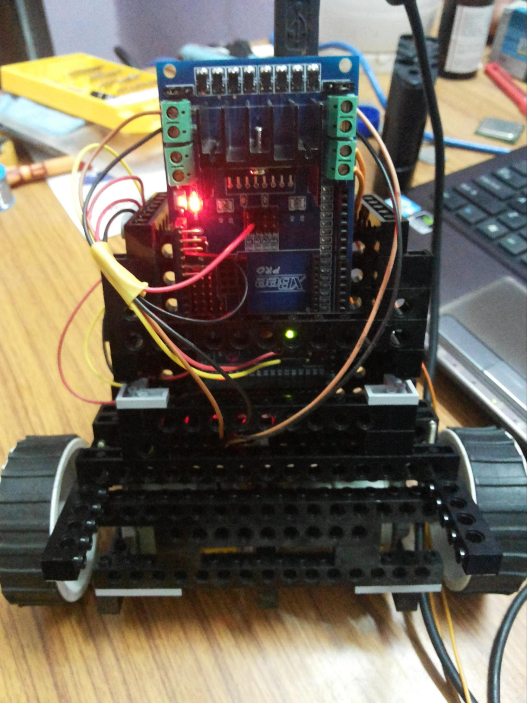
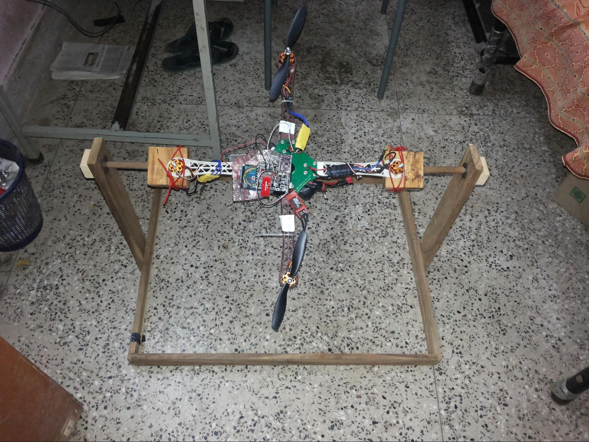
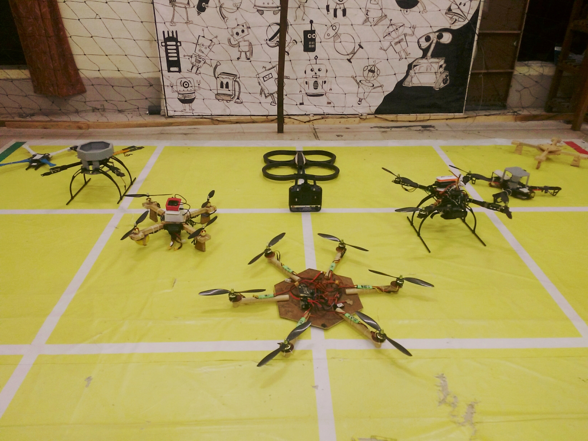
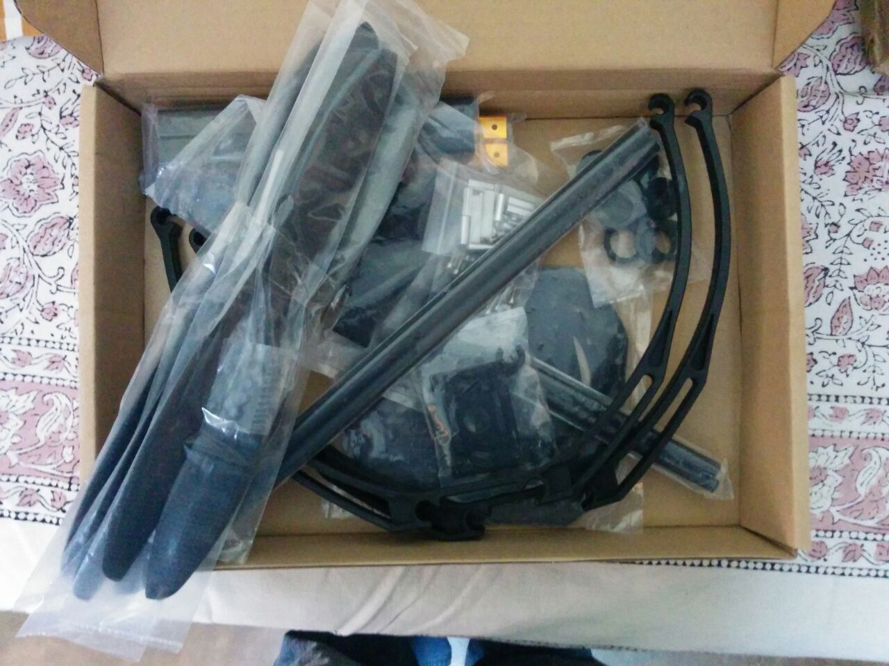

From the Ark labs
Quadrotor Project in MS to ARK Initiative of India
The journey of ARK started in a small hostel room in IIT Kharagpur when it was simply known as The Quadrotor Project. Being the only project of its kind on campus, we never felt the need to give it a unique name.
The project's journey from a generically named hobby project to Aerial Robotics Kharagpur that participated in IARC Beijing is quite a unique one. After the stint at Beijing, some would say that the journey is complete. But those of us who have worked on any autonomous machine, know that this is a journey that seldom ends. The possibilities are endless.
Initial Seeds
The initial seeds of the idea came from the Dream-a-Bot project submission for making a quadrotor. To get
the project started we in Technology Robotix Society (TRS) tried putting together some funds
and bought chassis, motors, ESC and an advanced arduino.
The first 8k funding came as a personal loan from Ishan,
then TRS Head and my wing-mate. Using the equipment obtained we were planning to develop the basic control
system ourselves that will let us manually fly the quad.
CB took up the controller development
as MSc thesis project in the Physics Department. He was a close friend of Ishan's, one year senior to us and
wanted to work on controller development. Till this time the team comprised of me, Ishan and CB. While me
and CB focussed on what equipment we should buy, Ishan and Kalyani helped us with getting the finances for
them.
Ground experiments before flying
As controller development started we realized that developing a PID controller to balance roll pitch yaw directly will be a momentous task. So we switched to developing a self balancing bot that works on the same principles. It was the first bot we made using Lego kits and Arduino Mega.
Parallely we also interfaced motors to an arduino and saw BLDC motors spin for the first time at full speed. We roped in RSC, my wing-mate, Githin, Mrinal and Soumyadeep, TRS subheads at the time and Avinash, TRS head at the time. Most of the experiments were done in RSCs room as it was the emptiest, strangely devoid of RSC's personal belongings.
From these learnings we realized that working on and testing a quadrotor requires a much more controlled environment where you are not worried about the bot flying off and hurting someone. Additionally chassis breaking is unavoidable, when tuning something as sensitive as PID flight controller. But at the time there were no funds to build an extensive lab and we did not have much experience to go about creating a proposal for one. Thus we decided to improvise.
This gave birth to the idea of making a wooden stand which gives complete freedom of movement to the quadrotor on one axis. After multiple visits to the carpenter (Umesh) by RSC and Yogesh, the rolling stand was created. However we soon realized that a wood stand can't me made fiction free enough to allow the quadrotor to swing freely. In any case it gave us a stable place to test the quadrotor without it flying off.
We did come up with improved designs but due to lack of time and resources they were not manufactured.
Enter IARC
While we were doing these experiments, we also felt the need to have a more concrete objective or an application for which we can design an autonomous quadrotor. On one fine Saturday morning in March 2013 I came across IARC or the International Aerial Robotics Competition. The IARC angel-strike (Mission 6) competition seemed like an interesting and daring aim to aspire to. We thought that this could be the key to attracting enthusiasts towards the project. Also seeing IIT Madras and BITS Pilani among the participants heightened our spirits. However, while we were aspiring to attain international standards ground realities were different; getting material to assemble the quadrotor in Kharagpur was extremely tough. Online marketplaces in India didn't have much to offer and getting things from abroad wasn't really feasible at the time. Small things such as simple bullet connectors and high current wires that connect motors to ESCs were difficult to obtain.
Through contacts in Aerospace Department we came to know about a workshop in Kolkata and Shushman was kind enough to help us with a car and driver which helped us get our first bullet connectors and power distribution board. The lack of these things lead to burning up of motors and ESCs later on. Getting backup material was also a pain due to lack of funds. So if something broke or got damaged, the project got stalled for atleast a month. In the midst of these difficulties keeping up enthusiasm of the group was another major task. From 2013 to 2014 our strength ranged from 3 to 15 with frequent help from other members of TRS (batch of 2015 and 2016) who were a part of the group at some point or the other.
Funding and Faculty
Our first real breakthrough on the technical as well as funding front happened in the year 2014. In early 2014, we came to know about the establishment of Center of Excellence in Robotics (CFER). Before this we had tried several things for funding. We tried drafting a proposal for the Boeing Student Project in collaboration with the Aero Department and also getting funds from Physics Department. However in both cases our aims as a student group did not align well with the funding sources and hence we decided to not pursue. On the other hand CFER was a great opportunity for us to get funding for our own proposal. Thus we focused on bringing The Quadrotor project under this center as it could bring anend to all our funding problems.
We dreamt big and began drafting a two phase proposal with the aim of participating in IARC and also developing the infrastructure required to undertake projects in autonomous aerial robotics. Several drafts were prepared and finalized with the help of Prof Jayant Mukhopadhyay and DK Pratihar. Discussions with Director sir were also held. It was during a post-midsem evening in the middle of mid-semester exams of Autumn 2014 that we gave our final presentation to a committee of Deans and Professors. By this time Me, Mrinal and Shushman had gained experience through internships in RI, CMU. This helped us in refining our proposal and presentation. Mrinal also purchased a Parrot AR drone. Based on the advice of our alumni Sanjiban (current PhD student at RI, CMU) having a ready to go drone would give us a head start and allow us to test our code without the need to setup all the hardware.
Lab Space
Once the question of funding and equipment seemed to be tending closer to an answer we focussed on another roadblock - the space required for the lab. Till this time we had shifted out of our hostel rooms and were working in a makeshift lab in one of the Gymkhana rooms given to TRS on the ground floor. But if the funding came through, that small room would have proved insufficient. Even flying the Parrot AR drone was not possible in this room. We looked at other options in CS Department since JM sir was our mentor. This was the old KRSSG room on the first floor. However it also proved too small for testing a quadrotor. Finally TRS came to our rescue and in negotiations with TRS and Gymkhana President we got the Gymkhana first floor room for the quadrotor project.
The room was big enough to fly the quadrotor and setup an Aerial Robotics lab. TRS was given another room on the lake side part of Gymkhana. This entire phase that lasted more than a year was like a war fought on many fronts, with Soumyadeep as TRS Governor, Ishan as ex-PR chair, me as Coordinator of Quadrotor/ex-Governor of TRS and Shushman as Coordinator of Swarm. It was only through close collaboration between two batches of TRS that it was ultimately made possible. This success is a tribute to the two batches who spent a major part of their time at Kgp in spreading robotics within and outside campus.
Recruitment and New Mission
With Lab Space, Funding and Mentoring issues solved, we had our first official recruitment of Quadrotor Group along with 4 other robotics research groups on campus. I was witness to a transition in Kgp, from barely any robotics research as I entered the campus in 2010 to placement like selections for research groups just as I was graduating. With these selections, our first set of "kids" - KK, Vishnu, Rishal, Sai and eventually Gaurav, Manash, Ankit and others, came into the team. They were largely responsible for making IARC 2016 possible, with all the founding members out of campus. We were also frequently advised by Prasann and Keshav, my batch-mates and Jit during this time and with their help we prepared our first procurement list. The first batch of equipment arrived just before I graduated in April 2015.
Also, it was in 2015 itself that a new Mission 7 was announced for IARC and Mission 6 was declared as completed. The new mission was even more difficult and challenging than the previous one. It opened up new avenues like AI and ground robot interaction in aerial robotics which were relatively unexplored at the time. The excitement of working on such novel problem statement boosted our morale further and also put us on a more equal footing with other international teams who would start working on the new problem at the same time as us. Now we were all set with new members, a mission, a lab, funding and faculty support. Thus began the preparation for IARC 2016.
The quadrotor journey has been a journey of many firsts, lows and highs and hopefully will continue to be so for years to come. We are grateful that our journey has received appreciation and attention by Director Sir, news media ( TOI, Indian Express, Economic Times, Business Standard ) and Clap for Kgp. We are also thankful to TheBetterIndia for putting together a video that highlights our goals and mission.
All in all, this is just a small step towards exploring the immense possibilities that lie ahead. And to achieve that, al we need are the words of Obi-Wan - May the thrust be with you!